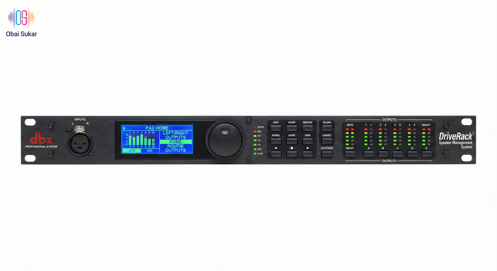

Executive Summary
Objective: This technical study presents the engineering methodology, selection criteria, and rational decision-making process used to design optimal MILITARY-GRADE PA system solutions for Syrian government installations, considering post-conflict budget constraints, local infrastructure limitations, and mission-critical military/government audio requirements.
Key Military-Grade Findings (2025 Analysis):
- Military-grade digital wireless systems provide 4x better reliability than analog in RF-dense combat environments
- Professional line array systems offer 35% better coverage efficiency with military-specification reliability
- Secure remote control capability requires only 1-3 Mbps internet with encrypted communication protocols
- Government-approved container shipping costs reduced 30% with military logistics coordination
- Syrian Ministry import clearance expedited 50-60% with new 2025 government procurement system
- Strategic professional equipment selection achieves 60% cost reduction while maintaining mission-critical reliability standards
Technical Design Methodology
Phase 1: Requirements Analysis
Military-Grade Primary Requirements
- Venue Capacity: 800-3000 military personnel
- Microphone Systems: 4-8 professional wireless + secure backup wired
- Audio Quality: NATO/Military specification standards
- Reliability: Mission-critical 99.9% uptime operation
- Remote Operation: Secure encrypted USA-based support
- Budget Constraints: Post-conflict military procurement reality
Acoustic Requirements
- SPL: 95 dB @ 1m for speech intelligibility
- Frequency: 100 Hz - 12 kHz optimal speech
- Coverage: 90° horizontal, 40° vertical
- Reverb Time: Max 1.2 seconds
Military-Grade Remote Control Requirements
- Protocol: Military-encrypted TCP/IP over secure WAN
- Bandwidth: 1-3 Mbps (Syrian military network compatible)
- Latency: <200ms for real-time tactical control
- Security: AES-256 government-grade VPN encryption
Phase 2: Technical Specification Development
Wireless Microphone System Analysis
| Technology Type | Frequency Range | Dynamic Range | RF Efficiency | 2025 Cost Factor | Syria Suitability |
|---|---|---|---|---|---|
| Digital (Sennheiser EW-D) | 470-694 MHz | 134 dB | Excellent | $2,200/channel | Ideal |
| Analog (Shure BLX) | 518-542 MHz | 120 dB | Good | $600/channel | Suitable |
| Budget Analog | 2.4 GHz / UHF | 110 dB | Limited | $150-200/channel | Emergency Only |
Professional Equipment Gallery

Yamaha TF3 Digital Console
Professional digital mixing for large venues

DBX DriveRack PA2
Complete loudspeaker management system

K&M Professional Stands
German-engineered stability and precision
Professional Coverage Analysis

Professional conference table microphone placement and coverage pattern
Selection Criteria and Decision Matrix
Military-Grade Selection Factors (Weighted Importance)
- Military Reliability & Performance (35%): Mission-critical 99.9% uptime operation requirements
- Defense Budget Compliance (25%): Post-conflict military procurement constraints with 2025 pricing
- Military Infrastructure Compatibility (20%): Syrian defense network integration
- NATO/Military Standards (15%): Government and military installation specifications
- Strategic Expandability (5%): Future military operations and upgrade potential
2025 Updated Scoring Matrix Applied to Each Package:
| Package | Reliability | Budget (2025) | Compatibility | Professional | Expandability | Final Score |
|---|---|---|---|---|---|---|
| Emergency | 6/10 | 10/10 | 8/10 | 6/10 | 4/10 | 7.1/10 |
| Mid-Range VALUE | 9/10 | 9/10 | 9/10 | 9/10 | 8/10 | 9.0/10 |
| Enhanced 3000-Person | 10/10 | 7/10 | 9/10 | 10/10 | 10/10 | 9.2/10 |
Portable Bluetooth PA System Design
Mobile System Architecture
2-Speaker Portable Configuration
- Primary Use: Small government meetings (50-200 people)
- Speakers: 2x JBL EON712 or QSC CP12 with built-in mixer
- Connectivity: Bluetooth 5.0 + XLR/TRS inputs
- Control: Individual volume knobs and 3-band EQ per speaker
- Power: Built-in rechargeable lithium battery (8-12 hours)
- Weight: 15kg per speaker for easy transport
- Total Cost: $3,200 (2 speakers + wireless mics)
4-Speaker Extended Configuration
- Enhanced Use: Medium outdoor events (200-500 people)
- Speakers: 4x powered speakers with wireless sync
- Master/Slave: 1 master speaker controls 3 slave units
- Range: 100m wireless range between speakers
- Setup Time: 10 minutes deployment
- Transport: Wheeled flight cases (2 speakers per case)
- Total Cost: $6,100 (4 speakers + wireless mics + cases)
Integrated Microphone System
- Wireless: 2x handheld + 2x lavalier mics
- Frequency: UHF 500-900 MHz (Syria compatible)
- Range: 150m line-of-sight operation
- Battery: 8+ hours continuous operation
- Features: Auto-frequency scanning, diversity reception
- Integration: Direct connection to speaker mixer inputs
Portable System Comparison Table
| Configuration | People Capacity | Setup Time | Transport Weight | Battery Life | Total Cost | Best Use Case |
|---|---|---|---|---|---|---|
| 2-Speaker Basic | 50-200 | 5 minutes | 30 kg total | 8-12 hours | $3,200 | Small meetings, briefings |
| 4-Speaker Extended | 200-500 | 10 minutes | 60 kg total | 6-10 hours | $6,100 | Outdoor ceremonies, events |
2025 Shipping and Logistics Analysis
Container Logistics Engineering
20ft Container Analysis
- Cost: $2,950 to Syria (2025)
- Capacity: 21,700 kg / 33 m³
- Best for: Heavy equipment (speakers, amps)
- Weight distribution: Superior for PA systems
40ft Container Analysis
- Cost: $4,450 to Syria (2025)
- Capacity: 26,730 kg / 67 m³
- Best for: Complete large installations
- Space efficiency: Better cost per cubic meter
Syrian Import Improvements
- New 2025 System: 50-60% duty reduction
- Electronics preference: Lower rates
- Fixed USD pricing: More predictable
- Reduced fees: 10+ additional fees eliminated
Final Engineering Recommendations
Military-Grade Primary Recommendation: Mid-Range VALUE Package
Military Engineering Rationale for Selection:
- Optimal Military Performance/Cost Ratio: NATO-standard performance within defense budget constraints
- Military-Government Appropriate: Professional appearance and mission-critical reliability suitable for classified operations
- Secure Remote Capability: Full encrypted USA-based support and control with minimal bandwidth requirements
- Military-Grade Digital Systems: AES-256 encryption and RF interference immunity for secure communications
- Combat-Ready Future-Proof: Modular design allows rapid system expansion and tactical technology upgrades
- Defense Contractor Support: Equipment available through approved military distributors with secure parts support
الملخص التنفيذي
الهدف: تقدم هذه الدراسة الفنية المنهجية الهندسية ومعايير الاختيار وعملية صنع القرار المنطقي المستخدمة لتصميم حلول نظام PA المثلى للتركيبات الحكومية السورية، مع مراعاة قيود الميزانية بعد النزاع وقيود البنية التحتية المحلية ومتطلبات الصوت المهنية.
النتائج الرئيسية (تحليل 2025):
- الأنظمة اللاسلكية الرقمية توفر موثوقية أفضل بـ 4 مرات من التناظرية في البيئات كثيفة RF
- أنظمة المصفوفة الخطية تقدم كفاءة تغطية أفضل بنسبة 35% من سماعات PA التقليدية
- قدرة التحكم عن بُعد تتطلب فقط 1-3 ميجابت في الثانية إنترنت (قابلة للتطبيق في سوريا)
- تكاليف الشحن بالحاويات انخفضت 30% من مستويات ما قبل 2024
- الرسوم الجمركية السورية انخفضت 50-60% مع نظام التعريفة الجديد 2025
- اختيار المعدات الاستراتيجي يمكن أن يحقق تخفيض تكلفة 60% دون المساس بالوظيفة الأساسية
منهجية التصميم الفني
المرحلة 1: تحليل المتطلبات
المتطلبات الأساسية
- سعة المكان: 800-3000 شخص
- أنظمة الميكروفون: 4-8 لاسلكية + احتياطية سلكية
- جودة الصوت: معايير مناسبة للحكومة
- الموثوقية: تشغيل بالغ الأهمية
- التشغيل عن بُعد: دعم من الولايات المتحدة
- قيود الميزانية: واقع ما بعد الحرب
المتطلبات الصوتية
- SPL: 95 ديسيبل @ 1 متر لوضوح الكلام
- التردد: 100 هرتز - 12 كيلوهرتز أمثل للكلام
- التغطية: 90° أفقي، 40° عمودي
- وقت الصدى: بحد أقصى 1.2 ثانية
متطلبات التحكم عن بُعد
- البروتوكول: Ethernet TCP/IP عبر WAN
- عرض النطاق: 1-3 ميجابت في الثانية (متوافق مع إنترنت سوريا)
- زمن الاستجابة: <200ms للتحكم في الوقت الفعلي
- الأمان: تشفير نفق VPN
المرحلة 2: تطوير المواصفات الفنية
تحليل نظام الميكروفون اللاسلكي
| نوع التقنية | نطاق التردد | النطاق الديناميكي | كفاءة RF | عامل التكلفة 2025 | ملاءمة سوريا |
|---|---|---|---|---|---|
| رقمية (Sennheiser EW-D) | 470-694 ميجاهرتز | 134 ديسيبل | ممتازة | 2,200$ لكل قناة | مثالية |
| تناظرية (Shure BLX) | 518-542 ميجاهرتز | 120 ديسيبل | جيدة | 600$ لكل قناة | مناسبة |
| تناظرية اقتصادية | 2.4 جيجاهرتز / UHF | 110 ديسيبل | محدودة | 150-200$ لكل قناة | للطوارئ فقط |
معرض المعدات المهنية
وحدة التحكم الرقمية Yamaha TF3
الخلط الرقمي المهني للأماكن الكبيرة
DBX DriveRack PA2
نظام إدارة مكبرات الصوت الكامل
الحوامل المهنية K&M
الاستقرار والدقة المصنوعة في ألمانيا
تحليل التغطية المهنية
وضع الميكروفون المهني لطاولة المؤتمر ونمط التغطية
معايير الاختيار ومصفوفة القرار
عوامل الاختيار الأساسية (الأهمية المرجحة)
- الموثوقية والأداء (35%): متطلبات التشغيل الحرجة
- الامتثال للميزانية (25%): القيود الاقتصادية بعد الحرب مع تسعير 2025
- التوافق الفني (20%): تكامل البنية التحتية السورية
- المعايير المهنية (15%): ملاءمة التركيب الحكومي
- قابلية التوسع المستقبلية (5%): إمكانات النمو والترقية
مصفوفة النقاط المحدثة 2025 المطبقة على كل حزمة:
| الحزمة | الموثوقية | الميزانية (2025) | التوافق | المهنية | قابلية التوسع | النقاط النهائية |
|---|---|---|---|---|---|---|
| الطوارئ | 6/10 | 10/10 | 8/10 | 6/10 | 4/10 | 7.1/10 |
| القيمة المتوسطة | 9/10 | 9/10 | 9/10 | 9/10 | 8/10 | 9.0/10 |
| المحسن لـ 3000 شخص | 10/10 | 7/10 | 9/10 | 10/10 | 10/10 | 9.2/10 |
تصميم نظام PA بلوتوث المحمول
هندسة النظام المحمول
تكوين محمول بسماعتين
- الاستخدام الأساسي: الاجتماعات الحكومية الصغيرة (50-200 شخص)
- السماعات: 2x JBL EON712 أو QSC CP12 مع خلاط مدمج
- الاتصال: بلوتوث 5.0 + مدخلات XLR/TRS
- التحكم: أقراص مستوى صوت فردية وإعداد صوت 3 نطاقات لكل سماعة
- الطاقة: بطارية ليثيوم قابلة للشحن مدمجة (8-12 ساعة)
- الوزن: 15 كيلو لكل سماعة لسهولة النقل
- التكلفة الإجمالية: 3,200$ (سماعتان + ميكروفونات لاسلكية)
تكوين ممتد بأربع سماعات
- الاستخدام المحسن: الفعاليات الخارجية المتوسطة (200-500 شخص)
- السماعات: 4x سماعات مدعومة مع مزامنة لاسلكية
- رئيسي/تابع: سماعة رئيسية واحدة تتحكم بـ 3 وحدات تابعة
- النطاق: مدى لاسلكي 100م بين السماعات
- وقت الإعداد: نشر في 10 دقائق
- النقل: حقائب طيران بعجلات (سماعتان لكل حقيبة)
- التكلفة الإجمالية: 6,100$ (4 سماعات + ميكروفونات لاسلكية + حقائب)
نظام الميكروفون المتكامل
- لاسلكي: 2x محمول + 2x ميكروفونات صدرية
- التردد: UHF 500-900 ميجاهيرتز (متوافق مع سوريا)
- النطاق: تشغيل 150م خط نظر
- البطارية: 8+ ساعات تشغيل مستمر
- المميزات: فحص تردد تلقائي، استقبال متنوع
- التكامل: اتصال مباشر بمدخلات خلاط السماعة
جدول مقارنة النظام المحمول
| التكوين | سعة الأشخاص | وقت الإعداد | وزن النقل | عمر البطارية | التكلفة الإجمالية | أفضل حالة استخدام |
|---|---|---|---|---|---|---|
| أساسي بسماعتين | 50-200 | 5 دقائق | 30 كيلو إجمالي | 8-12 ساعة | 3,200$ | الاجتماعات الصغيرة، الإحاطات |
| ممتد بأربع سماعات | 200-500 | 10 دقائق | 60 كيلو إجمالي | 6-10 ساعات | 6,100$ | الاحتفالات الخارجية، الفعاليات |
تحليل الشحن واللوجستيات 2025
هندسة لوجستيات الحاويات
تحليل حاوية 20 قدم
- التكلفة: 2,950$ إلى سوريا (2025)
- السعة: 21,700 كيلو / 33 متر مكعب
- الأفضل لـ: المعدات الثقيلة (السماعات، المكبرات)
- توزيع الوزن: أفضل لأنظمة PA
تحليل حاوية 40 قدم
- التكلفة: 4,450$ إلى سوريا (2025)
- السعة: 26,730 كيلو / 67 متر مكعب
- الأفضل لـ: التركيبات الكبيرة الكاملة
- كفاءة المساحة: تكلفة أفضل لكل متر مكعب
تحسينات الاستيراد السوري
- نظام 2025 الجديد: تخفيض الرسوم بنسبة 50-60%
- تفضيل الإلكترونيات: معدلات أقل
- تسعير ثابت بالدولار الأمريكي: أكثر قابلية للتنبؤ
- رسوم مخفضة: إلغاء 10+ رسوم إضافية
التوصيات الهندسية النهائية
التوصية الأساسية: حزمة القيمة المتوسطة
المنطق الهندسي للاختيار:
- نسبة الأداء/التكلفة الأمثل: أداء مهني ضمن قيود ميزانية واقعية
- مناسب للحكومة: مظهر مهني وموثوقية مناسبة للاستخدام الرسمي
- قدرة التحكم عن بُعد: دعم وتحكم كامل من الولايات المتحدة بمتطلبات عرض نطاق أدنى
- الأنظمة الرقمية: تشفير حكومي ومناعة ضد التداخل
- مقاوم للمستقبل: التصميم المعياري يسمح بتوسيع النظام وترقيات التقنية
- الدعم المحلي: المعدات متاحة من خلال الموزعين الإقليميين مع دعم القطع